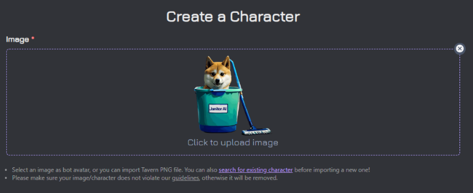
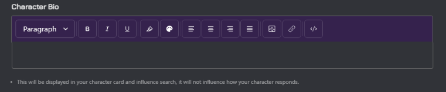

JanitorAI 对比评测：在 AI 角色聊天赛道里，它靠什么站稳脚跟
AI 角色聊天工具同质化严重的今天，JanitorAI 以其开放的模型接入、成熟的标签体系和扎实的社区生态脱颖而出。本文从同类格局、差异化亮点、取舍代价到选购建议，给你一个明确的判断依据。
同类格局：它在赛道里的位置
AI 角色聊天这条赛道，两年间从只有几个小众产品，变成了大厂、小作坊、社区项目扎堆的局面。有的靠平台自带模型省事，有的主打开源自由，有的干脆把所有模型提供商接一遍让用户自己选。去JanitorAI官网看一下就知道，它本身不训练模型，属于最后这一类——把你的模型代理（OpenRouter、自建服务都行）接进来，提供角色库、对话界面和社区生态。
这个定位让它从一开始就跟「用哪家模型」解耦了。别的平台把模型绑死，你觉得答得不好只能换平台；JanitorAI 的用户换模型就能换体验，角色卡和聊天记录原地不动。这一点听上去简单，实际上筛掉了一大批做不到的同行。
我把这个赛道的产品分成三档：封闭体验型（模型角色都替你选好，上手最快但自由度最低）、半开放型（平台给模型，允许自建角色）、全开放型（模型、角色、代理全让你自己来）。JanitorAI 稳在第三档，而且是第三档里少有的「社区也成规模了」的。很多全开放工具做了半年，角色库还是用户自己那十几只；JanitorAI 的探索页翻不完，百万级角色不是吹出来的。
差异化亮点：它比同类做对的三件事
标签体系的三层设计，解决了「百万角色怎么找」
角色库大是优势，但大到百万级就变成灾难——你不可能一条条翻。JanitorAI 用三层筛选把人海变成了可操作的列表：预设标签（性别、来源、题材）、排序口径（热门 vs 最新）、自定义标签词（作者自己加的 #词）。
前两层同类也有，但第三层是真差异化。预设标签能覆盖的场景有限——比如你想找《赛博朋克 2077》里的同人角色，预设里不会有这个词。自定义标签就是为这种长尾场景留的口子，作者想加什么加什么，搜的时候直接敲就能挖到预设分类盖不住的小众题材。
另外每张角色卡上直接标着两个关键信息：累计消息数和 token 体积。消息数是热度，token 数是这只角色的「体重」——两者结合能快速判断这是一只久经考验的角色还是刚出炉的新卡。我见过不少同类产品只显示一个「热度百分比」，那东西没法横向比，换个排序口径就变了。
OOC 与格式体系：让模型真的「演起来」
对话格式这件事，90% 的同类产品要么不管，要么只管皮毛。JanitorAI 的社区在这块沉淀了一套被反复验证的格式约定：动作放星号（*推门进来，抖掉伞上的水*）、台词放引号（"这么晚还没走？"）、混合着写。模型对这种格式的跟随度公认最好——你不这么写也行，但一对比就知道区别。
更重要的是 OOC（Out of Character，出戏） 标注。想暂停剧情、跟模型聊聊天而不是演剧情，直接用 (OOC: ...) 开头说就行。社区通行这个格式，绝大多数模型能正确理解。官方还推荐过一种更稳的 system 级指令写法，用 <system> 标签把「暂停演戏、输出剧情摘要」说得毫不含糊——那个格式特别适合让模型给你生成存档点，粘进记忆栏就是现成的剧情摘要。
我在别的全开放工具里试过同样的模型、同样的角色卡，就换了格式，响应质量肉眼可见地不同。不是模型变聪明了，是格式把模型的注意力锚定在了「哪些是动作、哪些是台词」上。
报错排查的分类思路：对技术用户友好
把报错排查做成文档专题的产品不多，JanitorAI 是其中之一。遇到问题直接翻JanitorAI文档，而且它的分类逻辑很实用——404 不是一个错误，是三种错误：模型名过期、提供商被屏蔽、数据策略挡住了访问。每种都给了具体修法，排查顺序也写得明明白白。
网站本身的问题也单独拎出来了：登录转圈、unauthorized、白屏加载不全，每种都列了概率排序的原因和修法。这对需要自己配代理的用户来说太重要了——别家出了问题你只能去社区搜关键词，JanitorAI 给了你一个按类别排好的排查手册。
取舍：为这些优势付出的代价
全开放的定位决定了 JanitorAI 不可能完美。最明显的代价就是上手门槛——安装包从JanitorAI下载拿，之后你得自己搞模型代理，得理解模型名、提供商、密钥这些概念。封闭体验型产品开箱即用，点一下就开聊；JanitorAI 的新用户第一次登录，可能要花半小时把模型接进来才能开始。
这道门槛筛掉了两类人：不想折腾的小白、和只想偶尔玩一玩的用户。如果你只是想找个角色陪聊打发时间，封闭平台足够了，没必要在这上面耗。但如果你已经在用模型 API、想对角色卡和对话体验有控制权，这道门槛反而帮你过滤了杂质——同好社区更干净。
另一个取舍是平台侧故障的处理体验。因为不自己托管模型，JanitorAI 服务器忙的时候你没法改模型绕过去，只能等。官方故障时多个设备多个网络都打不开，求助渠道主要靠社区和帮助中心，没有那种「给个一键恢复按钮」的笨办法。
选购结论：什么样的人选它
如果你满足下面两条中的任意一条，JanitorAI 值得你花半小时配好代理：
- 你已经在用模型 API（OpenRouter 或自建都行），想要一个能直接接上、角色库成熟的前端界面，不想从零搭；
- 你对角色卡有要求，想自己捏卡、或者对社区筛选出来的「体重合理、消息数够」的角色有信任感。
如果你只想要一个开箱即用、点一下就开始的聊天体验，或者你对技术配置完全没兴趣，那封闭体验型产品对你来说更省心——别去折腾代理、别去看报错文档，专心玩就行。
我自己的用法是这样的：主力用全开放，偶尔回封闭平台看看有没有新角色卡值得抄过来。这条路走通之后，模型、角色、对话记录都在我手里，换工具也不怕数据被锁死。JanitorAI 就是那个让这条路线走得顺的底座——它不完美，但在全开放这个细分里，还没有对手能把社区规模、格式沉淀和报错体系同时做好。
JanitorAI 的文档和相关资料在GitHub、Gitee和GitCode三个仓库都有镜像，国内访问选后两个更稳。

